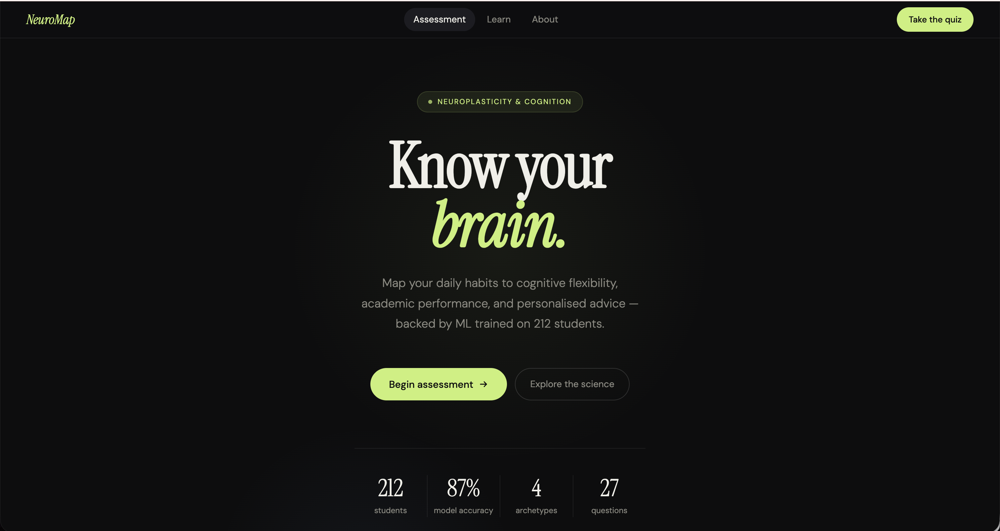
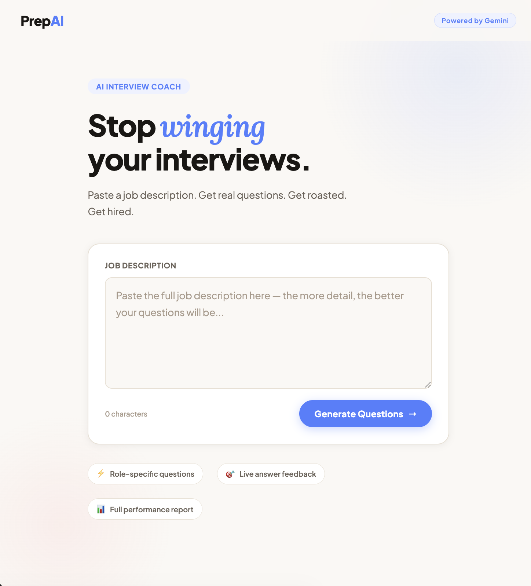
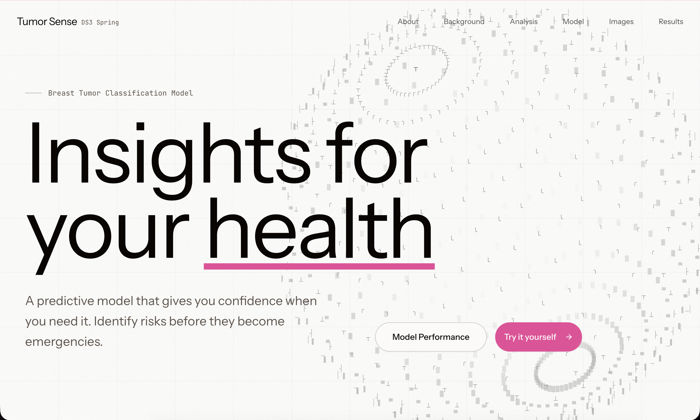

NeuroMap
Predicts cognitive flexibility and academic performance from daily habits, then
surfaces the drivers, tiered advice, and a real-time habit simulator. Three models
(Random Forest, Gradient Boosting, K-Means) trained on 212 students across 43
engineered features.
Python
FastAPI
scikit-learn
HTML/JS
View on GitHub

PrepAI — AI Interview Coach
Turns any job description into a personalized mock interview: six role-specific
questions, live AI feedback per answer, and a full performance report with scoring,
hire likelihood, filler-word analysis, and a tailored action plan.
FastAPI
JavaScript
Gemini
View on GitHub

Tumor Sense
An end-to-end SVM classification pipeline on the Wisconsin Breast Cancer Diagnostic
dataset. Reduces 30 cell-nucleus measurements to the 10 most predictive features and
delivers instant benign/malignant predictions (99.8% ROC-AUC, 97% F1).
Python
scikit-learn
SVM
NumPy
View live demo